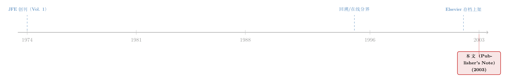

把过去标价上架：一页夹在顶刊里的「数字考古」启事
本文读的是 Elsevier Science (2003, Journal of Financial Economics) 的一则「Publisher's Note」：从 2002 年 7 月起，Elsevier 把旗下 67 种经济学期刊、共 34,000 篇 1995 年以前的论文搬上了 ScienceDirect，《Journal of Financial Economics》的回溯文献一路追到 1974 年第 1 卷。这不是一篇论文，而是一张「过刊」第一次被全文数字化、并被打包标价上架的通知单——但它恰好是一份可以拿来做实证的史料。
1 一份不是论文的「论文」
先说清楚一件事：本文要读的东西，根本不是一篇论文。
它没有研究问题，没有识别策略，没有数据表，甚至没有一位署名的作者。它躺在 2003 年《Journal of Financial Economics》第 67 卷的卷首罗马页码 v–vi 上，标题写着「Publisher's Note: Economics Journals Archive on ScienceDirect」——一张出版商的通知单，本质上是一则广告。它告诉你：从 2002 年 7 月起，你可以在 ScienceDirect 上读到 Elsevier 旗下经济学、计量经济学与金融学期刊的「回溯文献（backfiles）」了。
那为什么还要为它写一篇评述？
因为在金融经济学的顶刊里，这种「非论文的论文」其实自成一类。我们读过《七百一十七页上的一段话：一篇没有数据的 RFS「论文」》，读过《一页夹在顶刊里的广告：当尘封的「过刊」第一次被标上价格》，也读过《页码消失的那一天：JFE 给每篇文章发了一个「身份证」》。它们都不研究资产定价，却都在替一件更隐秘的事情留下证据：知识本身，是如何被生产、被存储、被定价、被检索的。
而这一页，恰好记录了一个临界点——人类把整整一门学科的「过去」，第一次完整地搬进了电子货架。
2 这页纸到底说了什么
把这则启事拆开，其实是一份冷冰冰的清单。我们先把真实的数字摆出来，因为后面所有的讨论都要靠它们。
首先，是规模。 这套「期刊存档（Journal Archive / Backfiles）」一共收录了 Elsevier 旗下 67 种经济学期刊、34,000 篇 1995 年以前发表的全文论文。叠加上 1995 至 2003 年间已经在线的另外 30,000 篇——并且「每天还在增长（and growing daily）」——读者在同一个检索界面后面，面对的是一座逼近 64,000 篇的文库。对《Journal of Financial Economics》而言，这条回溯线一直拉到 1974 年的第 1 卷。
接着，一个自然的问题是：它凭什么能「全文检索」？ 答案藏在一句很容易被略过的技术说明里：每一篇文章不是简单地扫描成一张张图片了事，而是「一个 ascii 文件与全文 PDF 一同载入（an ascii file is loaded together with the PDF of the full text）」。换句话说，PDF 负责「给人看」，而那个看不见的纯文本文件负责「给机器读」。更进一步，标题、摘要、参考文献等书目信息被「重新录入为 HTML（re-keyed into HTML）」。
这一步，才是整件事的关键。
3 真正关键的一步：让「过去」可被机器追溯
一张扫描件和一段可检索的文本，看上去只差一层窗户纸，经济含义却天差地别。
想想 1974 年那一卷《JFE》。在纸质时代，它躺在图书馆某个书架的某一格里。你要引用它，得知道它在那儿；你要知道它在那儿，往往得靠另一篇论文的脚注把你「带」过去。文献之间的联系，是靠一代代研究者用手工脚注，一根一根接起来的。信息一旦沉到足够深的过刊里，它被再次发现的概率就近乎随机。
而这则启事真正承诺的，是把这套「手工接线」自动化。它专门提到了一项功能：通过 CrossRef 链接服务，对 Elsevier 及其他参与出版商的全文做自动参考文献链接（automatic reference linking）——用它自己的话说，让你得以「追溯经济学研究历史的相当一部分（trace a significant part of the history of economics research）」。
这句话值得停一下。一篇 2003 年的论文，现在可以点一下它脚注里 1974 年那篇《JFE》，直接跳到全文。引文网络第一次不再是一张「只能向前、不能回头」的单行图，而成了一张可以双向穿行的网。后来我们习以为常的 Google Scholar「被引次数」、各种文献计量、乃至「把因子拖回 1800 年」式的长史样本（可参见《把因子拖回 1800 年：一场对 p-hacking 的两百年审判》），其底层前提，正是这一步——历史被数字化、且可被机器追溯。
然后，反转出现了： 这页纸越往后读，语气越像一份商业合同，而不是一封技术情书。
4 把「公共品」装进「打包」与「门禁」
如果说前半页讲的是「技术上能做到」，后半页讲的就是「商业上如何收费」。而这恰恰是它最有「经济学」味道的部分。
第一，定价方式是「打包（packaging）」。 启事写得很直白：Elsevier 按「学科包（subject packages）」而非单本期刊出售回溯文献，理由是「研究需求会跨越单本期刊的边界（research needs cross the boundaries of individual journals）」。听上去是替读者着想，但任何学过产业组织的人都会立刻认出这套话术——这是捆绑销售（bundling）。它顺带给出的好处也很诚实：你的图书馆能借此接触到许多本来没订的期刊，从而「减少文献传递的需求」、填补馆藏空缺、还能替换掉丢失或破损的旧刊。
第二，准入方式是「门禁（access control）」。 要读全文，机构必须先购买回溯包；访问则基于「IP 地址识别（IP address recognition）」，作为机构 ScienceDirect 许可的一部分。
把这两条放在一起看，一个张力就浮出来了：一篇 1974 年发表的论文，作为知识，是早就该进入公共领域的「过去」；可一旦它被数字化、被全文索引、被自动链接，它又被重新装进了一个需要付费、需要 IP 鉴权的私有货架。 数字化既极大地降低了知识的「检索成本」，又给它重新加上了一道「准入价格」。这正是我们在《一页夹在顶刊里的广告》里讨论过的那条暗线——当尘封的过刊第一次被标上价格，便宜的是搜索，变贵的是门票。
启事最后一行，几乎是这套逻辑的注脚：想知道「具体定价与详细信息」，请让你的图书管理员联系最近的 Elsevier 区域销售办公室——后面跟着五个区域、五个邮箱地址。学科的历史，到了这里，被分成了五个销售大区。
5 文献脉络：从书架，到 ascii，到引文网络
这页纸没有参考文献，自然也没有传统意义上的「文献脉络」。但如果我们把视角抬高，把它放进「学术知识如何被基础设施重塑」这条线里，它的位置其实非常清晰。
早期， 学术交流的载体是纸：1974 年《JFE》创刊，论文以装订成卷的形式沉淀进图书馆，文献之间靠脚注手工连接。中段， 1995 年成了启事里反复出现的那条分界线——它之前的论文属于「回溯文献」，之后的属于「在线原生」。这条线本身就说明，大约在 1990 年代中期，电子出版从「补录历史」切换到了「默认在线」。然后， 2002 年 7 月，Elsevier 完成了对 67 种经济学期刊、34,000 篇旧文的回溯数字化与上架。最后， 2003 年，这则通知以「Publisher's Note」的身份，被印进了《JFE》第 67 卷的卷首——也就是我们手里这一页。

它不是这条脉络里某个「思想」的突破，而是某个「基础设施」的落成。但正因为如此，它对后来所有依赖大样本、长史、引文网络的金融经济学研究，都构成了一块看不见的地基。
6 评论与延伸（Q&A + 研究方向）
(a) 几个可能的疑问
Q：这页纸既不是论文，也没有数据，凭什么值得读？
因为它是一份「关于学术生产本身」的一手史料。我们读论文，是为了知道世界如何运转；读这种通知单，是为了知道「我们用来认识世界的工具」如何被造出来、又被谁定价。它记录的，正是金融经济学赖以存在的检索基础设施的一个临界时刻。
Q：「全文检索」难道不是把 PDF 扫进去就行了吗？
不行，这是最容易被误解的一点。一张扫描的 PDF 对机器而言只是像素，搜不了。启事专门强调，每篇文章是「ascii 文件 + PDF」一同载入、书目信息「重录为 HTML」。是那个看不见的纯文本层，而不是 PDF，让 1974 年的论文第一次变得「可被搜索、可被链接」。
Q：把旧论文数字化，是纯粹的公共福利吗？
不完全是。技术上它确实把检索成本压到接近于零；但商业上，它通过「学科打包 + IP 门禁」把这些本应沉入公共领域的旧文，重新圈进了付费墙。降低的是搜索成本，新增的是准入价格——这恰恰是一道标准的信息经济学题目。
Q：为什么是「1995 年」这条线？
因为启事把文库一分为二：1995 年以前的 34,000 篇算「回溯（backfiles）」，需要单独购买；1995 年及以后的 30,000 篇算「在线原生」。这条线大致标记了 Elsevier 电子出版从「补录历史」转向「默认在线」的拐点，对任何想用其元数据做研究的人都是一个关键的结构断点。
Q：「自动参考文献链接」为什么是这页纸里最重要的一句？
因为它把引文网络从「单向」变成了「双向可追溯」。在它之前，旧文献是否被重新发现近乎随机；在它之后，一次点击就能从 2003 年跳回 1974 年。后来文献计量、被引分析、长史因子研究的可行性，全都建立在这一步之上。
Q：把它当成数据来用，最大的坑是什么？
覆盖偏差。这套库只含 Elsevier 一家、67 种期刊。用它的元数据去刻画「整个经济学的引文史」，会系统性地高估 Elsevier 系期刊之间的相互引用、低估跨出版商的链接——这是个不可忽视的选择性问题。
(b) 几个可能的研究问题与提案
1. 数字化是否「复活」了沉睡的旧文献？
【经济故事】当 1974–1994 年的旧文在 2002 年突然变得可全文检索、可自动链接，它们的被引轨迹会不会出现一个结构性跳升？这等于给「检索成本下降如何影响知识扩散」提供了一次准自然实验。 【可行性】中。处理组为 Elsevier 系经济学期刊的回溯文献，对照组为同期未数字化、或更晚数字化的期刊，用交错双重差分 (staggered difference-in-differences, DiD) 比较上架前后的引用流。数据可由 Crossref / OpenAlex 引文库构建。难点在于干净地确定每本期刊的「上架时点」，并提防交错 DiD 的已知陷阱（可参见《当「更稳健」的设计悄悄把符号弄反了——重读交错双重差分》）。
2. 「打包销售」的福利账：捆绑回溯包，谁得益、谁买单？
【经济故事】Elsevier 明说按「学科包」而非单刊出售。这是教科书里的捆绑定价。对图书馆而言，捆绑究竟是降低了单位获取成本，还是逼它们为用不上的期刊付费？ 【可行性】中。需要机构层面的订阅与价格数据（往往不公开，是主要障碍），结合各馆的下载/使用日志，估计捆绑相对于「单刊自选」的福利变化。识别上可借助不同机构议价能力的差异。
3. 覆盖偏差如何扭曲了我们的「引文地图」？
【经济故事】既然主流引文库的早期覆盖严重偏向少数大出版商，那么我们据此画出的「学科影响力地图」「谁是奠基性论文」，会不会本身就被基础设施的覆盖结构带偏？ 【可行性】高。纯元数据工作，无需机密数据。把 Elsevier 回溯库的覆盖时点叠加到 OpenAlex 的全量引文上，量化「数字化前/后」可见性差异如何系统性改写被引排名。是一个干净、可立即做的科学计量项目。
4. 检索成本下降，会让研究「更趋同」还是「更多元」？
【经济故事】当所有人都能轻易搜到同一批旧文，引用是会收敛到少数「明星论文」（富者愈富），还是因为长尾被重新发现而更分散？这关系到数字化对知识生态的深层影响。 【可行性】中。以引用分布的集中度指标（如基尼系数、HHI）为被解释变量，以期刊数字化时点为冲击。挑战在于把数字化效应，与同期 Google Scholar 普及等其他冲击区分开。
参考文献
- Elsevier Science (2003). Publisher's Note: Economics Journals Archive on ScienceDirect. Journal of Financial Economics 67(1), v–vi.